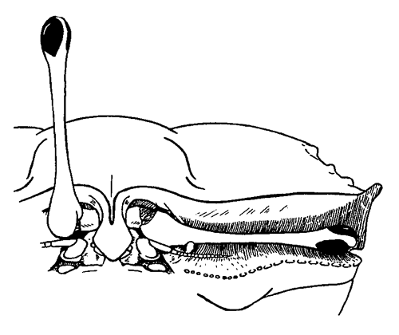
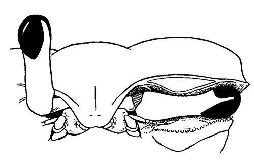
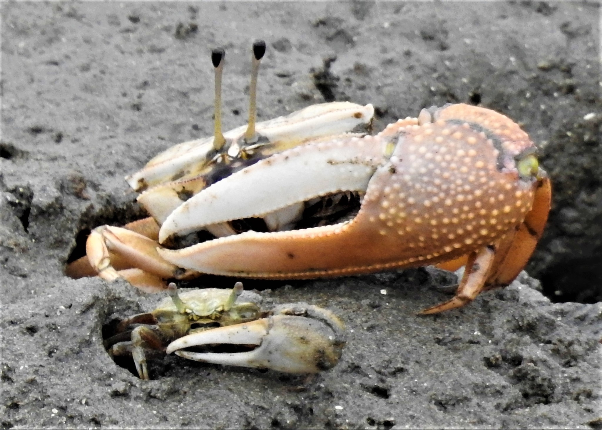

a. Claws are asymmetric, with one very large and one small (male). — Go to 2

Male fiddler crab with asymmetric claws

a. Eyestalks of crab are close together (a.k.a. "narrow-front") [footnote 1]. — Go to 3
Narrow-front, with eyestalks close together
b. Eyestalks of crab are separated (a.k.a. "broad-front") [footnote 1]. — ♂ Male Austruca annulipes, ♂ Male Minuca argillicola, ♂ Male Leptuca batuenta, ♂ Male Leptuca beebei, ♂ Male Paraleptuca boninensis, ♂ Male Minuca brevifrons, ♂ Male Leptuca coloradensis, ♂ Male Paraleptuca crassipes, ♂ Male Leptuca crenulata, ♂ Male Austruca cryptica, ♂ Male Leptuca deichmanni, ♂ Male Leptuca dorotheae, ♂ Male Minuca ecuadoriensis, ♂ Male Leptuca festae, ♂ Male Minuca galapagensis, ♂ Male Leptuca helleri, ♂ Male Minuca herradurensis, ♂ Male Leptuca inaequalis, ♂ Male Austruca lactea, ♂ Male Leptuca latimanus, ♂ Male Leptuca limicola, ♂ Male Austruca mjoebergi, ♂ Male Leptuca musica, ♂ Male Leptuca oerstedi, ♂ Male Minuca osa, ♂ Male Petruca panamensis, ♂ Male Austruca perplexa, ♂ Male Leptuca pygmaea, ♂ Male Leptuca saltitanta, ♂ Male Paraleptuca splendida, ♂ Male Leptuca stenodactylus, ♂ Male Leptuca tallanica, ♂ Male Leptuca tenuipedis, ♂ Male Leptuca terpsichores, ♂ Male Leptuca tomentosa, ♂ Male Austruca triangularis, ♂ Male Leptuca umbratila, ♂ Male Minuca vocator, or ♂ Male Minuca zacae
Broad-front with eyestalks farther apart
a. Major claw on male with large flattened fingers resembling shears, with almost no gape when closed and very straight edge along the lower margin of the movable fingler (dactyl) [footnote 2]. — ♂ Male Uca insignis or ♂ Male Uca ornata

Large flattened fingers on major claw, with virtually straight lower edge of dactyl
b. Major claw on male with thinner, less flat fingers, not resembling shears, usually with clear gape when closed; generally some curvature or arc along the lower edge of the movable finger (dactyl) [footnote 2]. — Go to 4
Thinner, less-flat fingers on major claw (as illustrated by both crabs)
a. No long style on eye. — ♂ Male Tubuca acuta, ♂ Male Tubuca arcuata, ♂ Male Tubuca bellator, ♂ Male Gelasimus borealis, ♂ Male Tubuca capricornis, ♂ Male Tubuca coarctata, ♂ Male Gelasimus dampieri, ♂ Male Tubuca demani, ♂ Male Tubuca dussumieri, ♂ Male Tubuca elegans, ♂ Male Gelasimus excisa, ♂ Male Tubuca flammula, ♂ Male Tubuca forcipata, ♂ Male Xeruca formosensis, ♂ Male Uca heteropleura, ♂ Male Tubuca hirsutimanus, ♂ Male Uca intermedia, ♂ Male Gelasimus jocelynae, ♂ Male Tubuca longidigitum, ♂ Male Uca monilifera, ♂ Male Tubuca paradussumieri, ♂ Male Tubuca polita, ♂ Male Uca princeps, ♂ Male Tubuca rhizophorae, ♂ Male Tubuca rosea, ♂ Male Tubuca seismella, ♂ Male Tubuca signata, ♂ Male Gelasimus tetragonon, ♂ Male Tubuca typhoni, ♂ Male Gelasimus vocans, or ♂ Male Gelasimus vomeris
b. Long style on eye on same side as major claw, with style about as long as eyestalk. — ♂ Male Uca stylifera

Long style on major-claw side eye
a. Eyestalks of crab are close together (a.k.a. "narrow-front") [footnote 1]. — ♀ Female Tubuca acuta, ♀ Female Tubuca arcuata, ♀ Female Tubuca bellator, ♀ Female Gelasimus borealis, ♀ Female Tubuca capricornis, ♀ Female Tubuca coarctata, ♀ Female Gelasimus dampieri, ♀ Female Tubuca demani, ♀ Female Tubuca dussumieri, ♀ Female Tubuca elegans, ♀ Female Gelasimus excisa, ♀ Female Tubuca flammula, ♀ Female Tubuca forcipata, ♀ Female Xeruca formosensis, ♀ Female Uca heteropleura, ♀ Female Tubuca hirsutimanus, ♀ Female Uca insignis, ♀ Female Uca intermedia, ♀ Female Gelasimus jocelynae, ♀ Female Tubuca longidigitum, ♀ Female Uca monilifera, ♀ Female Uca ornata, ♀ Female Tubuca paradussumieri, ♀ Female Tubuca polita, ♀ Female Uca princeps, ♀ Female Tubuca rhizophorae, ♀ Female Tubuca rosea, ♀ Female Tubuca seismella, ♀ Female Tubuca signata, ♀ Female Uca stylifera, ♀ Female Gelasimus tetragonon, ♀ Female Tubuca typhoni, ♀ Female Gelasimus vocans, or ♀ Female Gelasimus vomeris
Narrow-front, with eyestalks close together
b. Eyestalks of crab are separated (a.k.a. "broad-front") [footnote 1]. — ♀ Female Austruca annulipes, ♀ Female Minuca argillicola, ♀ Female Leptuca batuenta, ♀ Female Leptuca beebei, ♀ Female Paraleptuca boninensis, ♀ Female Minuca brevifrons, ♀ Female Leptuca coloradensis, ♀ Female Paraleptuca crassipes, ♀ Female Leptuca crenulata, ♀ Female Austruca cryptica, ♀ Female Leptuca deichmanni, ♀ Female Leptuca dorotheae, ♀ Female Minuca ecuadoriensis, ♀ Female Leptuca festae, ♀ Female Minuca galapagensis, ♀ Female Leptuca helleri, ♀ Female Minuca herradurensis, ♀ Female Leptuca inaequalis, ♀ Female Austruca lactea, ♀ Female Leptuca latimanus, ♀ Female Leptuca limicola, ♀ Female Austruca mjoebergi, ♀ Female Leptuca musica, ♀ Female Leptuca oerstedi, ♀ Female Minuca osa, ♀ Female Petruca panamensis, ♀ Female Austruca perplexa, ♀ Female Leptuca pygmaea, ♀ Female Leptuca saltitanta, ♀ Female Paraleptuca splendida, ♀ Female Leptuca stenodactylus, ♀ Female Leptuca tallanica, ♀ Female Leptuca tenuipedis, ♀ Female Leptuca terpsichores, ♀ Female Leptuca tomentosa, ♀ Female Austruca triangularis, ♀ Female Leptuca umbratila, ♀ Female Minuca vocator, or ♀ Female Minuca zacae
Broad-front with eyestalks farther apart